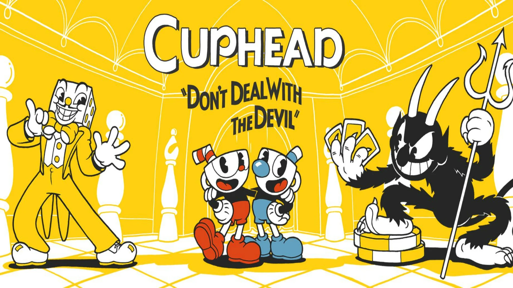

|
Меню
Создание игры и завязка игры |
Cuphead-игра для PS(об игре)Создание игры Cuphead создана двумя братьями из Канады, Чадом и Джаредом Молденхауэрами. Они горели идеей игры с детства и бросили буквально все силы на производство. Первую попытку разработки они предприняли еще в 2000 году, но из-за недостатка средств быстро отказались от затеи. В 2010, после успеха инди-видеоигры Super Meat Boy, Молденхауэры вместе с аниматором Джейком Кларком вернулись к задумке.Cuphead воплощает в себе переработку культовых жанровых игр в жанре «run 'n gun» (Contra, Metal Slug, и Gunstar Heroes) в сюрреалистичном стиле мультфильмов 30-х годов: Popeye, Betty Boop, Bimbo и старый Mickey Mouse. На первый взгляд может показаться, что игра рассчитана на детей из-за мультяшных рисовок. Но с первых минут мы понимаем, что игрушка совсем не детская, а чтобы дойти до конца, нужно быть крутым и напористым. Завязка игрыДавным-давно в волшебном месте под названием городок жили-были два брата по имени Cuphead и Mugman, они жили без забот под присмотром старца Чайника. Однажды, двое ребят забрели далеко от дома и, вопреки многочисленным предупреждениям Старца Чайника, пойдя не той дорогой, вошли в Казино Дьявола. Внутри, Cuphead и Mugman выигрывали и выигрывали. Ловкачи!-воскликнул король Жребий, неуклюжий менеджер казино. "Этим парням очень везёт!" - сказал Дьявол (владелец казино) и предложил им сыграть в игру. Cuphead кинул игральные кости и вдруг выпало по 1 очку на каждой кости. "Вы проиграли!" - воскликнул Дьявол. "Теперь вы должны мне свои души!" - обрадовался Дьявол. Ребята стали молить о пощаде. Дьявол согласился, но толко под одним условием: два брата должны были собрать все контракты должников казино. |